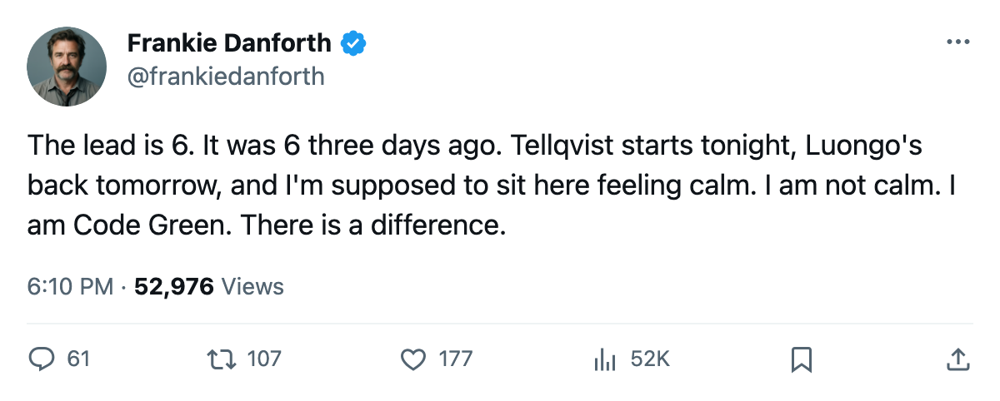
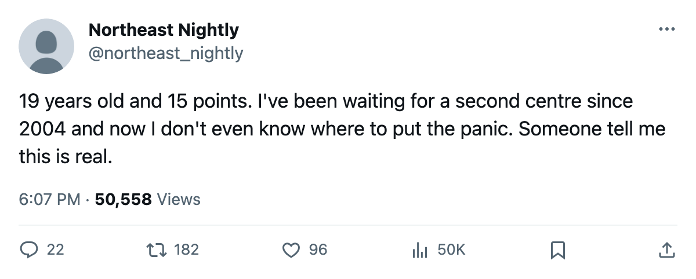

TOR
TORDANFORTH: Code Green, the 6-point lead that hasn't moved, and the Boston game I keep counting
Three straight wins, a Cup-winning goalie back tomorrow, and a gap that hasn't budged since Sunday.
 Frankie DanforthColumnist · Queen City Telegram
Frankie DanforthColumnist · Queen City Telegram
Code Green

The lead is 6 points. Three days ago it was 6 points. Toronto has won 3 straight since then, scored 5 at Buffalo, and gotten its goaltender back tomorrow.  Boston Bruins is 22 points behind with one game in hand.
Boston Bruins is 22 points behind with one game in hand.
The Panic Meter reads Green. Code 1. I am not comfortable.
The arithmetic: the point gap is unchanged. Boston burned one game in hand by losing to New York on 2005-11-14, which is good. One remains. If Boston wins it the gap is 4 points before they arrive at our building on 2005-11-19. They beat us once already. The head-to-head reads 0-1-0.
What is working
 Marian Gaborik99 sits at +11 on the Bureau's Development Index, an overall of 99, 6 goals in 16 games at 22.7 minutes a night. Petr Chlup87 has 15 points in 17 games. He is 19.
Marian Gaborik99 sits at +11 on the Bureau's Development Index, an overall of 99, 6 goals in 16 games at 22.7 minutes a night. Petr Chlup87 has 15 points in 17 games. He is 19.  Rostislav Klesla87 is +8.
Rostislav Klesla87 is +8.  Barret Jackman86 has 14 points from the left side.
Barret Jackman86 has 14 points from the left side.  Stanislav Chistov87 is +8, 9 points in 17 games. Five Leaf risers on the Index this edition.
Stanislav Chistov87 is +8, 9 points in 17 games. Five Leaf risers on the Index this edition.
That is not nothing. A 19-year-old with 15 points is not a fluke, and a man at +11 on the Index is not a man who regresses to his base in a week.
What is not
Mikael Tellqvist73 is -5 on the Index tonight, overall 73. He faces a  Detroit Red Wings club missing
Detroit Red Wings club missing  Derian Hatcher79,
Derian Hatcher79,  Brendan Shanahan80, and
Brendan Shanahan80, and  Pavel Datsyuk70. Detroit scores 39 goals in 15 games. If Tellqvist cannot beat that version of Detroit,
Pavel Datsyuk70. Detroit scores 39 goals in 15 games. If Tellqvist cannot beat that version of Detroit,  Roberto Luongo95's return tomorrow buys one day of relief, not a month.
Roberto Luongo95's return tomorrow buys one day of relief, not a month.
The week ahead
Detroit tonight, Boston Saturday,  Philadelphia Flyers on 2005-11-23. Three home games. Philadelphia is 8-6-0 on a 2-game win streak, so they are not dead. Boston is 7-2 on the road, the most road wins in the division. They come here Saturday with one point in the season series already banked.
Philadelphia Flyers on 2005-11-23. Three home games. Philadelphia is 8-6-0 on a 2-game win streak, so they are not dead. Boston is 7-2 on the road, the most road wins in the division. They come here Saturday with one point in the season series already banked.
If Toronto wins all three the lead is 12 points and the game in hand is gone. I will write Code Green and mean it. I will not stop writing columns.
Code Green. I want it to hold.

